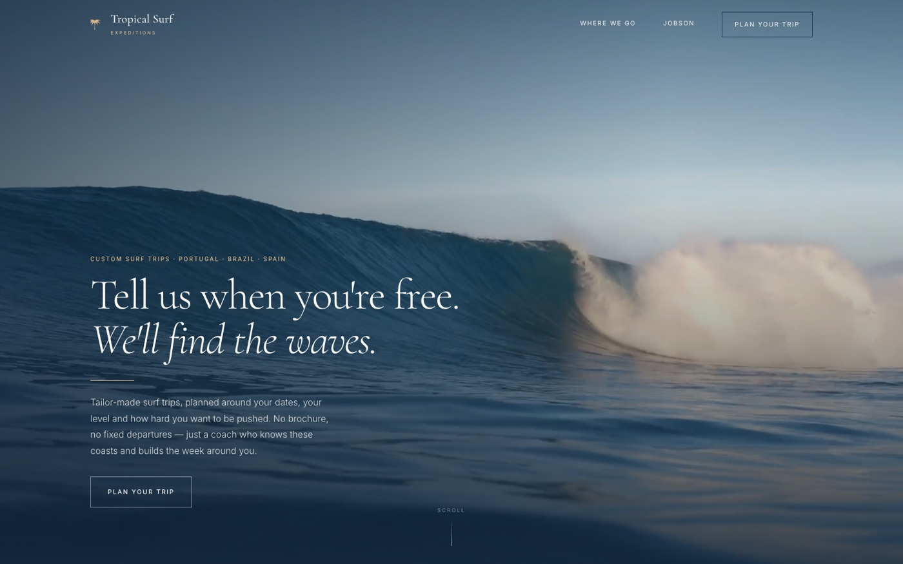
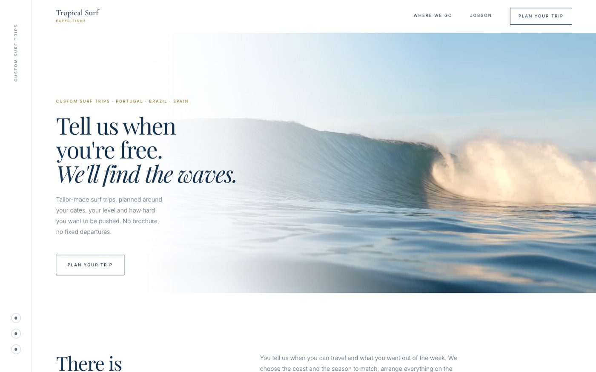

Two directions · Draft for review
Two drafts of the same site — same words, same footage, different feel. Nothing here is fixed, and all of it is open to feedback. Have a look through both and tell me what you think: what works, what doesn't, and which one sounds more like you.

Warm · Quiet · Film-led
The water fills the screen and the words get out of the way. Warm paper, a classic serif, and a lot of empty space. Reads like a private club — it withholds, and lets you come to it.

White · Editorial · Magazine
Built on the site you liked. The headline starts on white paper and walks out onto the water — that crossing is the whole idea. Pure white, a sharper serif, and a thin rail down the left edge.
Before you look
Anything with a dotted gold underline is a fact I've guessed and need you to confirm — how many years you've taught, which regions you actually run, best months. Hover or tap one to see what's needed.
The enquiry form looks and behaves correctly but doesn't send anything yet. There are no prices, and no reviews from past guests — I'd rather leave those out than invent them.
There's a small dark bar at the bottom of every page. It switches you to the same page in the other direction and keeps roughly your place, so you can compare the same section side by side.